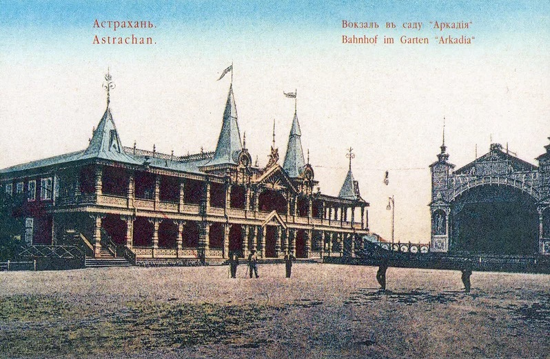
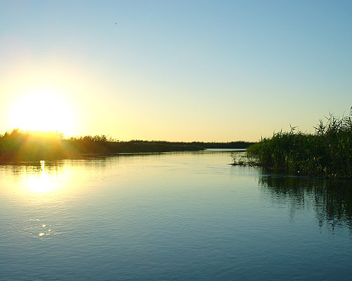

Добро пожаловать на сайт о чудесном городе Астрахань!
Жемчужина Каспия — так называют Астрахань, расположенную недалеко от берегов Каспийского моря, во всех туристических гидах. Этот город на Волге славится отличной рыбалкой и охотой, а уж про астраханские арбузы наслышаны на всем постсоветском пространстве. На данном сайте вы можете ознакомиться с основными характеристиками этого города

История Астрахани
Как появился город и многое интересное

Климат
Какая температура, что удобно выращивать
Население
Статистика за последние 10 лет
Интересные факты об Астрахани
- Астраханский кремль – построен в XVI веке, входит в список ЮНЕСКО.
- Чёрная икра – Астрахань славится осетровыми и самой дорогой икрой в мире.
- Самый жаркий город России – летом температура может достигать +45°C.
- Родина русского арбуза – здесь ещё в XVII веке начали выращивать сладкие арбузы.
- Здесь снимали "Белое солнце пустыни" – некоторые сцены фильма сняты в астраханских степях.